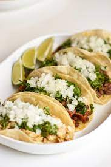

Tacos

About the Dish
The origin of tacos aren't exactly known, but it is a common form of Mexican street food. Tacos can be made with a variety of fillings. My favorite is chicken. I like mine with guacamole or sour cream, cheese, tomatoes, onion, and lettuce.
Recipe source: The Wholesome Dish.
Ingredients
- 1 lb of ground beef (90%-93% lean)
- 1 tbsp of chili powder
- 1 tsp of ground cumin
- 3/4 tsp of salt
- 1/2 tsp of dried oregano
- 1/2 tsp of garlic powder
- 1/4 tsp of ground black pepper
- 1/2 cup of tomato sauce
- 1/4 cup of water
- 12 taco shells (I recommend soft corn tortillas)
- shredded cheese & lettuce
- chopped tomatoes
- diced red onions
- guacamole
Instructions
- Place large skillet over medium-high heat. Add beef. Break meat apart with spoon.
- Add chili powder, cumin, salt, oregano, garlic powder, and pepper to meat. Stir. Cook until meat is cooked through (~6-8 minutes).
- Reduce heat to medium. Add tomato sauce and water. Combine and stir occasionally for 7-8 minutes until some of the liquid evaporates. Remove from heat.
- Warm taco shells.
- Fill taco shells with 2 tbsp of the beef. Top with desired toppings.